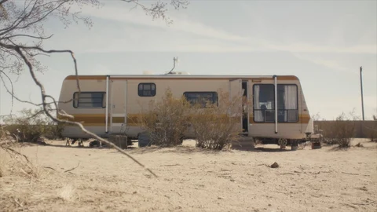

Photography, film & Transmission Magazine.
“Personal, intimate, and refreshingly direct.”


“Careful to convey a sense of sensitivity.”
“[The] work has a real analogue, retro tinge that breathes a lot of personality. There is a lot of natural beauty, highlighted with natural light.”
Vogue China
Fashion & accessories


Chanel
Nozomi Iijima & Irene Kim


“[The] raw approach to photography and writing will assure you that there are actually new voices out there [that] aint afraid to say shit.”
Film
“The enduring appeal of the ‘real’ in life as in art.”

The Overland — Devil in Me
Watch ↗Director
Transmission Magazine
All issues“Eclectic and intelligent.”
“One of the most exciting publications of the moment.”

“Continues to grow into something much larger than just the brainchild of a single powerful mind.”
Founded in 2012.
Over ten issues and 50,000 copies.